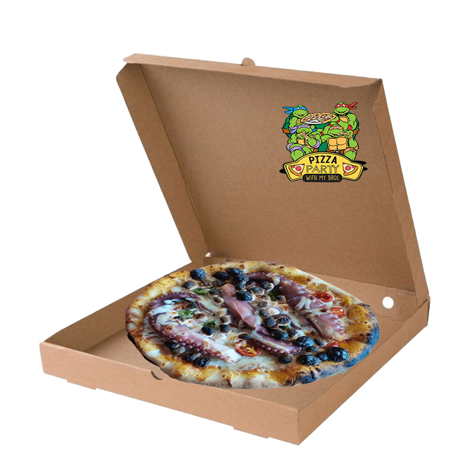
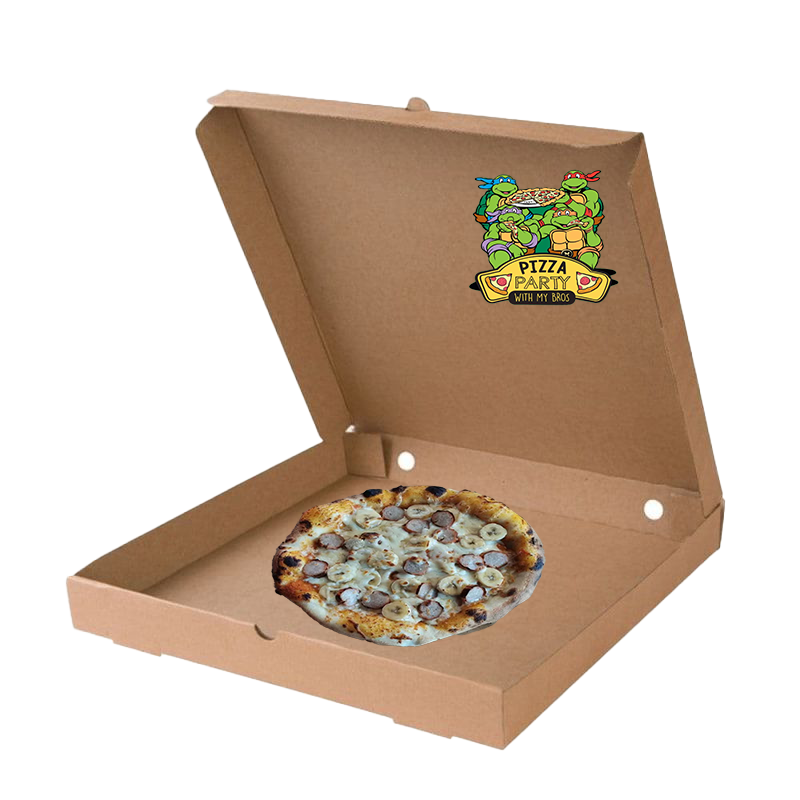

NINJA TURTLES PIZZA TIMELINE

- 


- 
PIZZA MARSMELLO & OCTOPUS - EPISODE 29: APRIL FOOL
WELKE EPISODE
In de Teenage Mutant Ninja Turtles-animatieserie uit 1987, aflevering 29, getiteld "April Fool," In deze aflevering besluiten de vier Turtles, met name Raphael, om April een lesje te leren voor haar neiging om anderen voor de gek te houden met grappen en moppen. Ze bedenken een uitgebreide valstrik waarbij April wordt overtuigd dat ze in een gevaarlijke situatie verkeert en hulp nodig heeft. De Turtles spelen allemaal een rol in de grap, waarbij Splinter en de Turtles zich vermommen om April te overtuigen dat ze een groep slechteriken moeten bestrijden. Uiteindelijk wordt de grap onthuld en wordt April zich bewust van de April Fools-dagviering. Ze kan de humor van de situatie waarderen, en de Turtles en April vieren dan samen April Fools' Day met deze pizza!
MIJN PERSOONLIJKE REVIEW